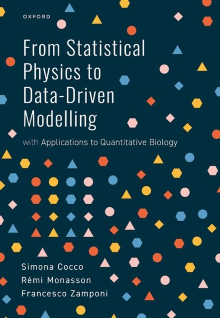
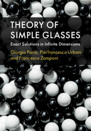

Books:
 
Theory of Simple Glasses - Exact Solutions in Infinite Dimensions
Giorgio Parisi, Pierfrancesco Urbani, Francesco Zamponi
Cambridge University Press, 2020
From Statistical Physics to Data-Driven Modelling - with Applications to Quantitative Biology
Simona Cocco, Rémi Monasson, Francesco Zamponi
Oxford University Press, 2022
Tutorials website
Spin Glass Theory and Far Beyond - Replica Symmetry Breaking after 40 Years
Edited by Patrick Charbonneau, Enzo Marinari, Marc Mézard, Giorgio Parisi,
Federico Ricci-Tersenghi, Gabriele Sicuro, Francesco Zamponi
World Scientific, 2023
News website
A
project
on the history of replica symmetry breaking in physics